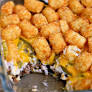

Ultimate Tater Tot Casserole

Description
This recipe is for the cheesiest, most delicious tater tot casserole on earth. Be sure that those you serve it to are worthy of its greatness.
Ingredients
- One lb. ground beef
- One can cream of mushroom soup
- One can whole green beans
- Shredded cheese
- Frozen tater tots
Steps
- Cook the ground beef in a frying pan until brown and crumbled.
- Put the cooked ground beef into the bottom of a casserole dish or metal baking pan.
- Drain the green beans and layer them on top of the beef.
- Pour and smooth the can of soup over the green bean layer (do not add milk to the soup first--just use it straight from the can).
- Layer shredded cheese to taste.
- Line up the tater tots in tidy little rows on top.
- Bake at 350 degrees until the tater tots are golden brown.
Home